What is GroundWorkPM?
GroundWorkPM is a professional property management platform built for modern property managers. It consolidates income tracking, expense management, tenant administration, maintenance, and owner reporting into a single, opinionated tool.
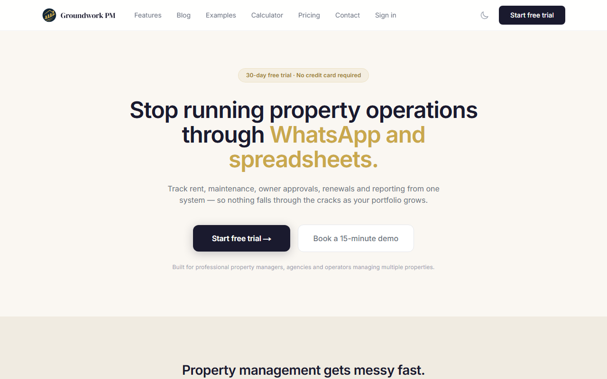
The platform is built around four core workflows:
- Financial tracking — Log income and expenses per property and unit, with automatic P&L calculations
- Tenant management — Full tenant lifecycle from onboarding through lease renewal and vacating
- Maintenance operations — Kanban-style job tracking with vendor assignment and cost logging
- Owner reporting — Professional PDF statements with itemised income, expenses, and net returns
Roles & Access Control
GroundWorkPM has four roles. Access is enforced at both the route and API level — users cannot reach pages outside their role.
| Role | Who it's for | What they can access |
|---|---|---|
| MANAGER / ADMIN | Property manager, agency administrator | Full access — dashboard, tenants, income, expenses, maintenance, reports, settings, billing |
| ACCOUNTANT | Bookkeeper, accounts staff | Financial pages only — income, expenses, invoices, arrears, forecast, reports. No settings or user management. |
| OWNER | Property owner / landlord | The Report page only — owner statements with income breakdown, deductions, and net returns. Cannot see financial details. |
| TENANT PORTAL | Tenant (no account needed) | Public, token-based portal — view invoices, download PDFs, view documents, submit maintenance requests. |
ADMIN. The difference is organizationId: org-admins have an org ID and are scoped to their organisation; super-admins have no org ID and see all organisations via the platform admin panel.
Sign Up & Onboarding
New users are guided through a 3-step onboarding wizard immediately after signing up. No data entry is required to explore the platform — you can load a demo property in Step 3.
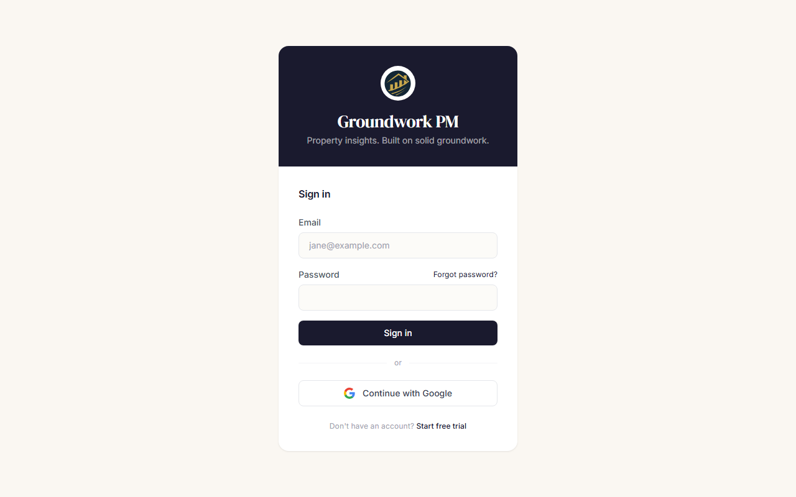
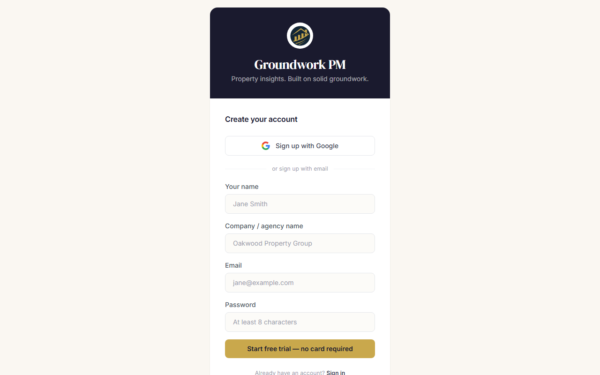
Onboarding: 3 Steps
Set up your first property
Enter the property name, type (Long-term rental or Short-let / Airbnb), currency, address, and city. If you signed up via Google OAuth, you'll also name your organisation here. Click Continue →.
Add your units
Add each unit inside the property — unit number (e.g. "A1", "101"), type (1 Bed, 2 Bed, Penthouse…), and monthly rent. Click Add another unit to keep going, or Skip for now to add units later from the dashboard.
Done — load sample data (optional)
Click Go to Dashboard → to start with your empty property, or pick a demo from the card picker and click Load sample property →. Demo properties come with 3 months of tenants, income, expenses, and arrears pre-loaded.
The Dashboard
Your command centre. The dashboard aggregates live data from across the platform into five KPI cards, four alert panels, a revenue trend chart, and property-specific tables.
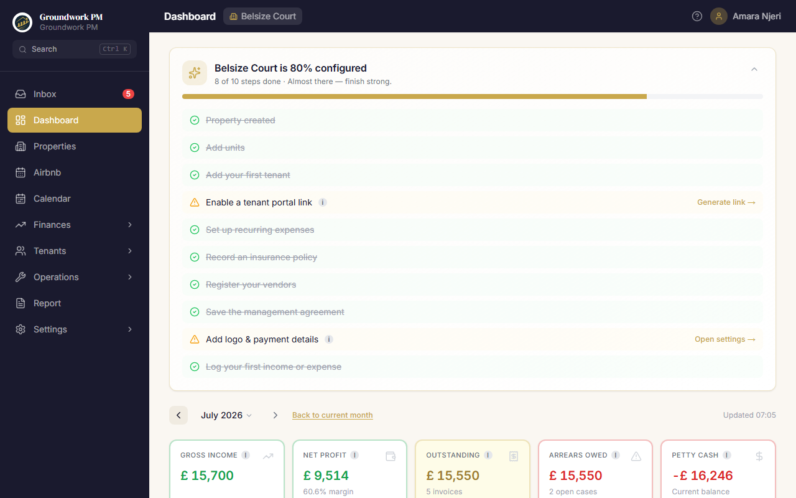
KPI Cards (top row)
| Card | What it shows | Where the data comes from |
|---|---|---|
| Gross Income | All income (excl. deposits) for the selected month | Income entries for accessible properties |
| Net Profit | Gross income minus expenses and agent commissions | Computed via calcUnitSummary() |
| Outstanding Invoices | Total unpaid invoice amount for the month | Unpaid invoices in accessible properties |
| Arrears Owed | Total overdue rent across all tenants | Sum of unpaid invoice balances past due date |
| Petty Cash Balance | Current petty cash balance | Recomputed from all petty cash entries |
Attention Required Alerts
Four alert cards show the health of your portfolio. Each card is colour-coded: red = critical amber = warning green = clear.
- Lease Watch — tenants with leases expiring in ≤30 days or already expired
- Unpaid Rent — invoices that are overdue or unsent this month
- Maintenance — open maintenance jobs, overdue recurring schedules
- Arrears — tenants with outstanding balances older than 30 days
Month Picker
The month picker (top right of the dashboard header) controls which month's data is shown. Click the left/right arrows to move months or click the month label to jump to a specific date. A Back to current link appears when you're viewing a past month.
Setup Progress widget
When a property is selected, an activation checklist appears above the KPI strip. It shows a 0–100% setup score plus a row-by-row ✅ / ⚠ checklist (units, tenants, portal links, recurring expenses, insurance, vendors, agreement, branding, first entry). Each incomplete row has a one-click CTA. Hidden for OWNER role. At 100% you can dismiss it — it reappears automatically if the score drops.
Operational Inbox
A single prioritised queue of everything that needs your attention today. Managers and accountants land here first. It's the daily landing surface and the only screen that promises "if it's not here, you don't need to act on it."
What appears in the inbox
Each row is a real event the system detected — not a configurable filter or a saved view. The inbox aggregates from nine sources:
- Overdue invoices — any invoice
SENTorOVERDUEwith a due date in the past - Lease expiries — tenants with a lease ending in ≤30 days (urgent inside 7 days)
- Urgent maintenance — jobs marked
URGENTstillOPEN - Tenant portal requests — maintenance jobs submitted by tenants, not yet acknowledged
- Compliance certificates expiring in ≤30 days
- Insurance policies ending in ≤30 days
- Arrears cases not
RESOLVEDand untouched for >7 days - Approvals pending — magic-link approvals open more than 24 hours (escalates to URGENT after 3 days)
- Smart Reminders — proactive suggestions written by the daily cron (see below)
Severity, action, dismiss, snooze
Every row carries one of three severity dots: URGENT WARNING INFO. Rows are sorted by severity then by days-overdue. Inline actions resolve the underlying issue without leaving the inbox — "Mark paid" on an overdue invoice, "Assign vendor" on an urgent job, "Send renewal offer" on a lease expiry, and so on. Hint-sourced rows show a ✨ Suggested badge plus a small ⏰ snooze (1h / 1d / 1w, per-user) and × dismiss control.
Smart Reminders (proactive cron)
Every morning at 07:00 UTC the cron checks for things you couldn't know about yet:
- Vacant unit > 30 days — suggests "Mark as listed"
- Deposit not settled > 14 days after move-out — opens the settlement flow
- Recurring expense due within 3 days — one-click to materialise this month's entry
- Low petty cash — balance < 20% of last 90-day average outflow
- Negative cashflow forecast — next 3 months shows a month going negative
- SLA breach — a case stage has stalled past its budget (see Cases below)
Hints clear automatically when the underlying state changes. Dismissed hints expire after 30 days unless they recur.
Mobile
The inbox is the first item in the mobile bottom navigation. The same rows render as stacked cards with a checkbox, severity dot, action menu, and the inline snooze / dismiss controls.
Cases & Approvals
Every operational issue gets a workspace — a timeline of comments, emails, attachments, status changes, and approvals — anchored to a visible workflow with per-stage SLA budgets. Replaces the WhatsApp + email + screenshot loop.
When a case is created
Cases are created automatically the moment a backing record exists. Today the only backed type is MAINTENANCE — every maintenance job auto-creates a case with the job description as its first comment. The workflow types LEASE_RENEWAL, ARREARS, COMPLIANCE, and GENERAL are defined and ready in code but don't auto-create yet; that's a follow-up phase.
The stage tracker (visible workflow)
Each case carries an ordered set of stages. A MAINTENANCE case moves through: Reported → Triaged → Quote requested → Quote received → Approval requested → Approved → Scheduled → In progress → Completed → Invoiced → Closed. The tracker at the top of each case page shows your current position. Completed stages render green; the current stage is gold; future stages are gray. Click a future stage to advance with an optional note; the overflow menu offers regress-with-reason for fixing slips.
Bypassed vs completed
If you set Status to RESOLVED / CLOSED before walking the workflow, the stepper shows an amber "Bypassed at [stage]" banner — the timeline never lies. Stages past the abandon point render faded with a dashed border. Reaching the natural completion stage and then closing shows a clean green "Completed" instead.
Per-stage SLAs
Each stage has its own budget in hours. Defaults come from the workflow definition; for MAINTENANCE the first two stages (Triaged, Quote requested) override from the property's Management Agreement (Emergency response hours when the job is emergency, otherwise Standard). The clock pauses automatically when the case is waiting on an external party — Owner, Tenant, or Vendor — so you're not penalised for someone else's delay. When a stage stalls past its budget, a SLA breach hint surfaces in your inbox (WARNING, escalating to URGENT at 2× the budget).
Communication unified in the timeline
Three communication systems all dual-write into the case timeline:
- System-sent emails (cron notifications, password resets, contact-form replies) — write to
EmailLogAND post an EMAIL_SENT event on the linked case - Tenant comm log entries (the existing per-tenant log) — post an EMAIL_SENT event AND a "View case →" backlink appears on the tenant's Comms tab
- Vendor emails (drafted from the case detail page) — write to
EmailLog+ post an EMAIL_SENT event
Open any case and you see the full operational history in one chronological feed — no inbox-hopping.
Magic-link approvals
Click Request approval on the case action panel. Fill in the approver's email, the question, an optional amount + currency, and an expiry window (default 72 hours, max 7 days). The system:
- Generates a single-use token and emails the approver a magic link to
/approve/[token] - Sets the case's waitingOn to OWNER (the SLA clock pauses automatically)
- Logs an APPROVAL_REQUESTED event on the timeline
The approver clicks the link — no login required, no portal training. They type their name (captured for the audit trail as respondedByName), then click Approve or Reject. The case auto-advances; a confirmation email goes back to the approver with a "This wasn't me — flag for review" link that triggers a DISPUTE state and notifies you.
/api/approvals/[token] is idempotent — email scanners can't accidentally consume an approval. The POST handler is rate-limited at 20 requests / IP / hour. Tokens are redacted to their last 4 characters in audit logs.
Cases list
/cases shows every case across your accessible properties with filters for status, waiting-on, type, and "assigned to me." Each row has a thin progress bar (e.g. 4 / 11) plus a coloured dot indicating who the case is waiting on. Click any row to open the case detail.
Maintenance ↔ Cases co-existence
The /maintenance page still exists — it's the domain-specific view (job board with status columns). /cases is the cross-cutting workflow view (timeline + comments + approvals). Each Maintenance job card has an Open case → link; each Case detail page has a View as maintenance job → link. Use whichever fits the moment.
Properties & Units
Manage your property portfolio — add properties, configure currencies, add units, and view property-level settings.
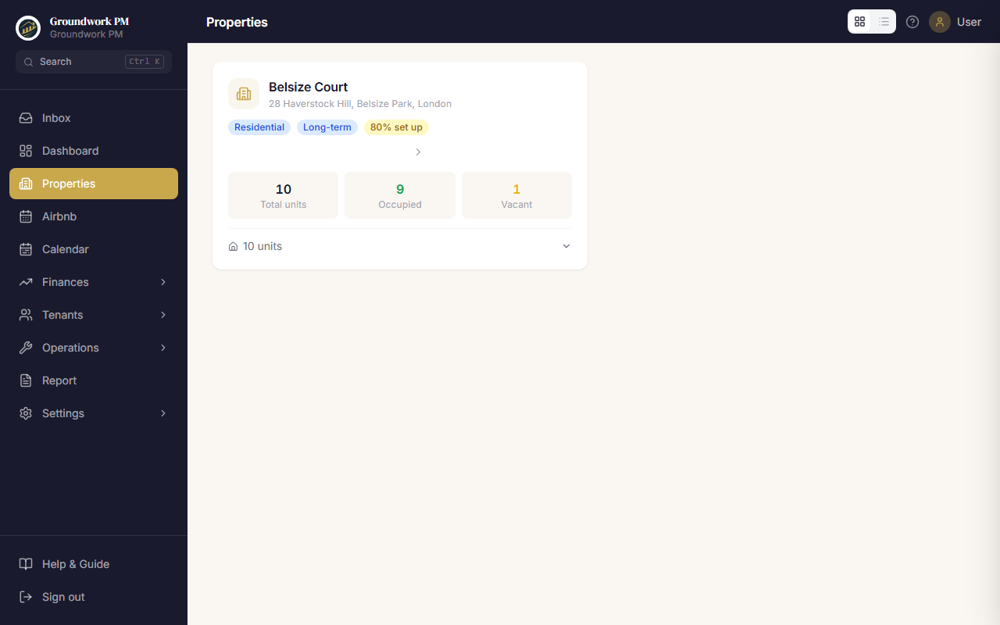
Property Types
| Type | Used for | Revenue tracking |
|---|---|---|
| LONGTERM | Residential long-term rentals | Monthly rent invoices per tenant |
| AIRBNB | Short-let / holiday / serviced apartments | Per-booking income with nightly rate and platform source |
Adding a Property
Click Add Property
Opens a form for name, type, currency, address, and city.
Set currency
Choose the currency for all income and expenses on this property. Supported: KES, USD, GBP, EUR, AED, ZAR, TZS, UGX, INR, CHF, and more.
Add units
From the property card or detail page, add units with number, type, and monthly rent. Unit types: Bedsitter, 1–4 Bed, Penthouse, Commercial, Other.
Tenant Management
The full tenant lifecycle — from adding a new tenant and issuing their first invoice, to lease renewal, deposit settlement, and vacating.
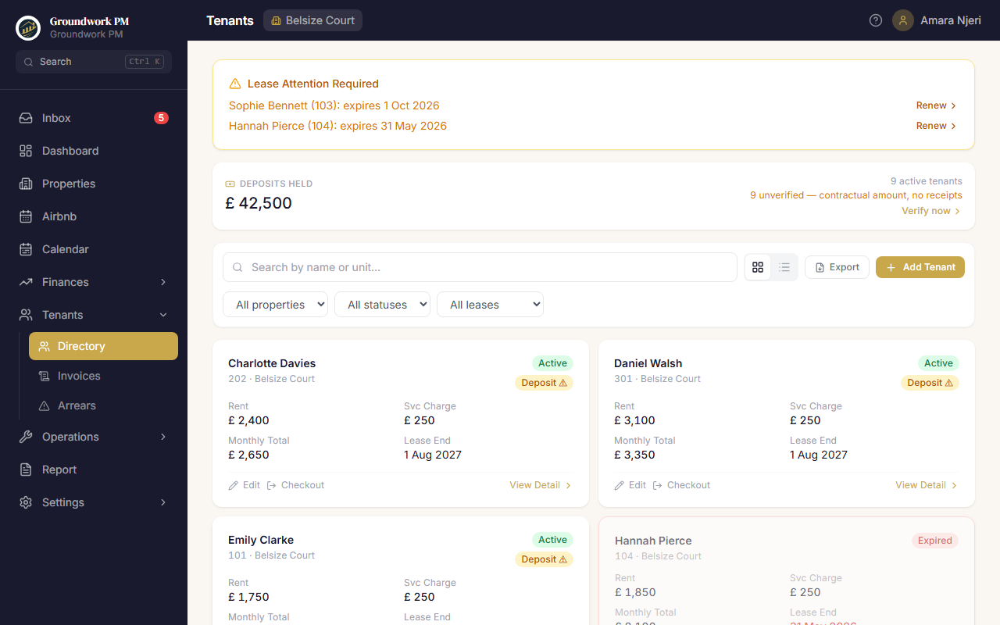
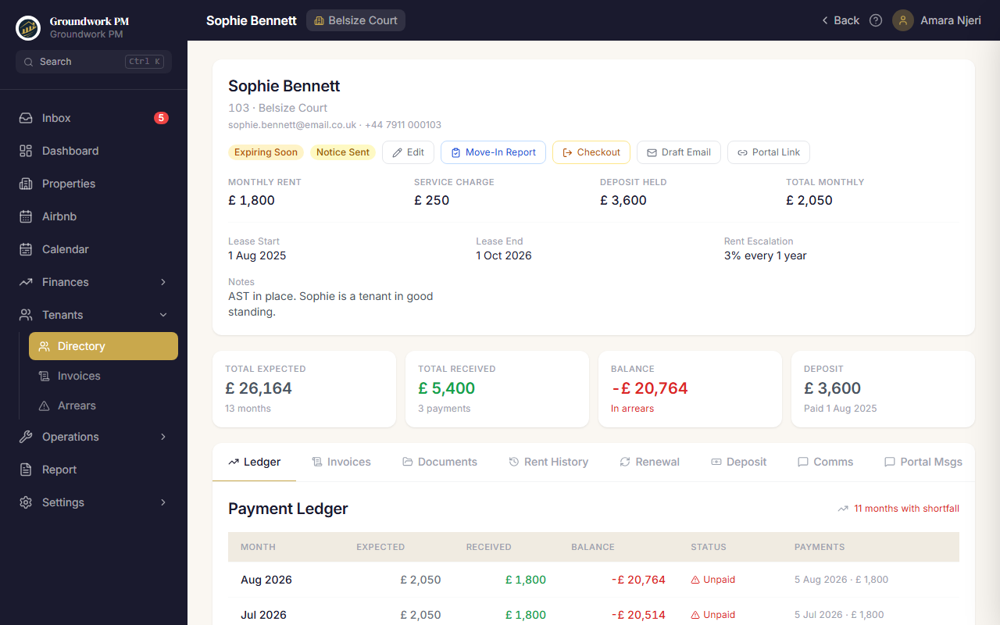
Tenant Detail Tabs
| Tab | What you can do |
|---|---|
| Ledger | Month-by-month rent payment ledger showing expected vs received amounts, payment variance, and running balance |
| Invoices | View, generate, send, and mark invoices paid. Download individual invoice PDFs. |
| Documents | Upload and manage lease agreements, IDs, receipts, and other documents stored in Supabase Storage |
| Rent History | Log rent escalations and adjustments with effective dates |
| Renewal | Progress the lease renewal pipeline (Notice Sent → Terms Agreed → Renewed), set proposed rent and end date |
| Deposit | Record deposit settlement with itemised deductions (cleaning, damage, unpaid rent, etc.) |
| Comms | Log outbound emails sent to the tenant, with templates for rent reminders, receipts, and renewal offers |
Adding a Tenant
Click Add Tenant
Opens a two-step modal. Step 1: name, email, phone, unit assignment, lease dates, monthly rent, service charge, deposit. Step 2: optional document upload (ID, lease agreement).
Letting fee prompt
After saving, the system automatically prompts you to record a letting fee (50% of first month's rent by default). Confirm to create the expense entry.
Generate first invoice
Navigate to the Invoices tab on the tenant detail page and click Generate Invoice for the first rental month.
Lease Renewal Pipeline
Track renewal progress through four stages:
When you set the stage to RENEWED, the system automatically copies the proposed rent to the tenant's monthly rent and updates the lease end date.
Generating a Portal Link
From the tenant detail page header, click Generate Portal Link. Share the unique URL with the tenant — they can view their invoices, download PDFs, upload documents, and submit maintenance requests without creating an account.
Income & Invoices
Track all rental income per property per month. The invoice system bridges the gap between what's expected and what's been received — giving you a real-time rent collection rate.
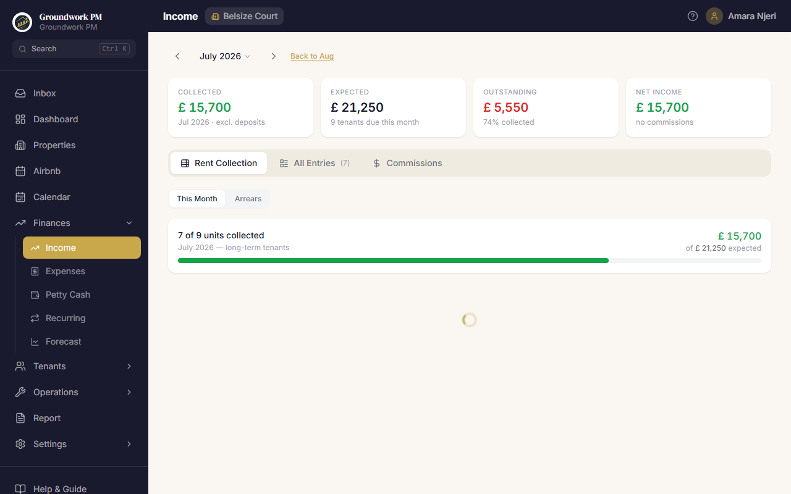
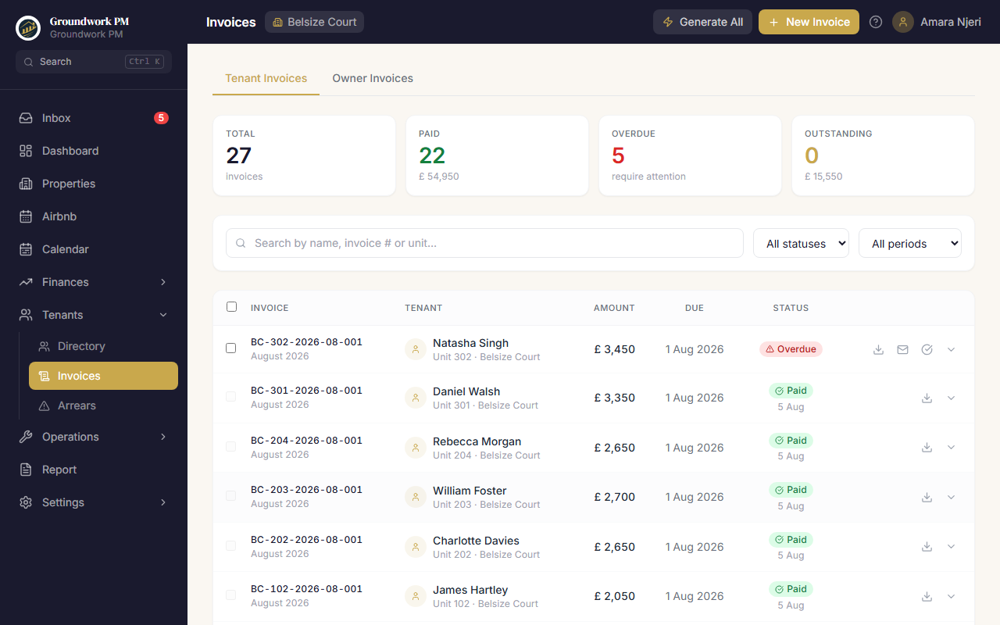
Invoice Workflow
Income Types
| Type | Description | Notes |
|---|---|---|
| LONGTERM_RENT | Monthly rent payment from long-term tenant | Auto-links to open invoice for that tenant/month and marks it PAID |
| AIRBNB | Short-let booking revenue | Includes nightly rate, check-in/out dates, platform source |
| SERVICE_CHARGE | Service charge or maintenance levy | Included in gross income |
| UTILITY_RECOVERY | Recovered utility costs from tenant | Included in gross income |
| DEPOSIT | Security deposit received | Excluded from gross income — appears in ledger but not P&L |
| OTHER | Any other income | Included in gross income |
Arrears
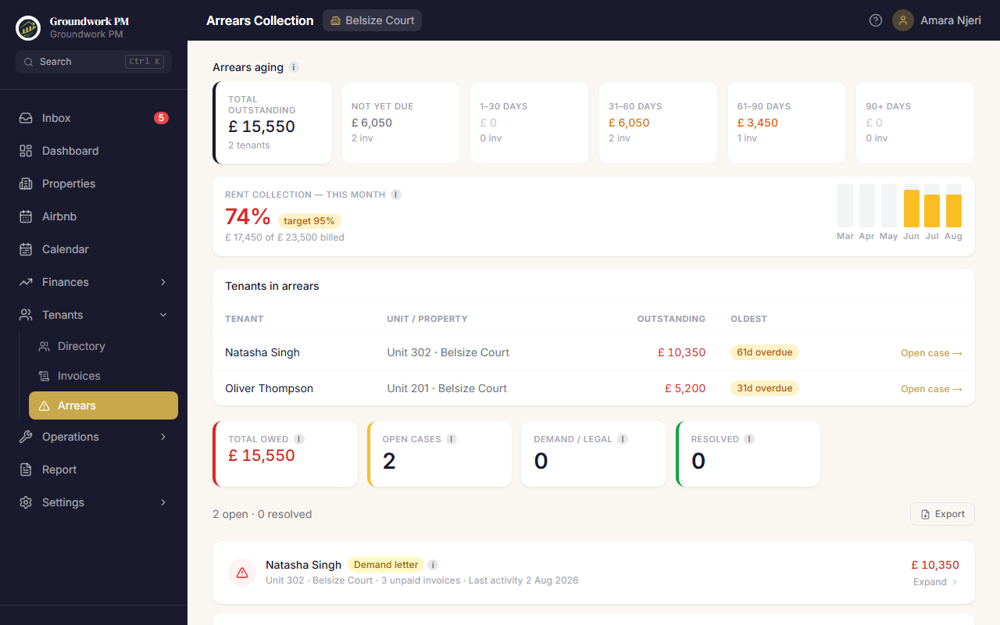
The Arrears page shows all tenants with outstanding balances. Filter by property or arrears age bracket. Use the email draft button to quickly generate a chase email for any tenant.
Expenses & Petty Cash
Log every property expense with category, scope, vendor, tax, and payment method. Expenses are separated between operating costs (P&L) and capital/sunk costs (balance sheet).
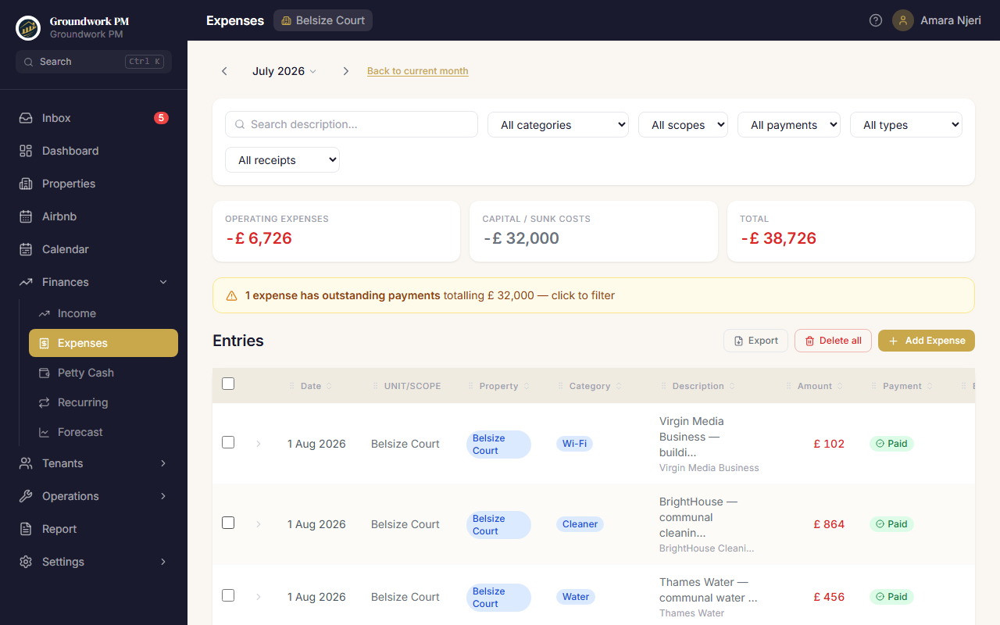
Expense Scope
| Scope | Assigned to | Use case |
|---|---|---|
| UNIT | Specific unit | Repair inside a single unit, appliance replacement |
| PROPERTY | Whole property | Building insurance, common-area maintenance, landscaping |
| PORTFOLIO | No specific property | Software subscriptions, management office costs |
Sunk Costs vs Operating Costs
Mark an expense as a Sunk Cost / Capital Item using the checkbox when adding or editing. Sunk costs are shown in reports as "Capital Items" and are excluded from the P&L — they don't reduce net profit but remain visible for reference.
Payment Status & Outstanding Balance
Expenses aren't just "logged" — you can track exactly how much has been paid and what's still owed. The add/edit form has a payment block capturing Amount Paid, Due Date, VAT Amount (kept separate — the Amount field is always net of VAT), Payment Method, Payment Reference, Payment Date, and notes.
From these, the system derives a status for each expense — never stored, always recomputed:
PAID PARTIAL UNPAID
The Expenses page surfaces a Balance + Due column, and any expense with a balance owing past its due date is flagged as overdue in a banner at the top of the page. Click the 🕓 Clock icon on any expense row to open its full change history with field-level before/after diffs.
Petty Cash
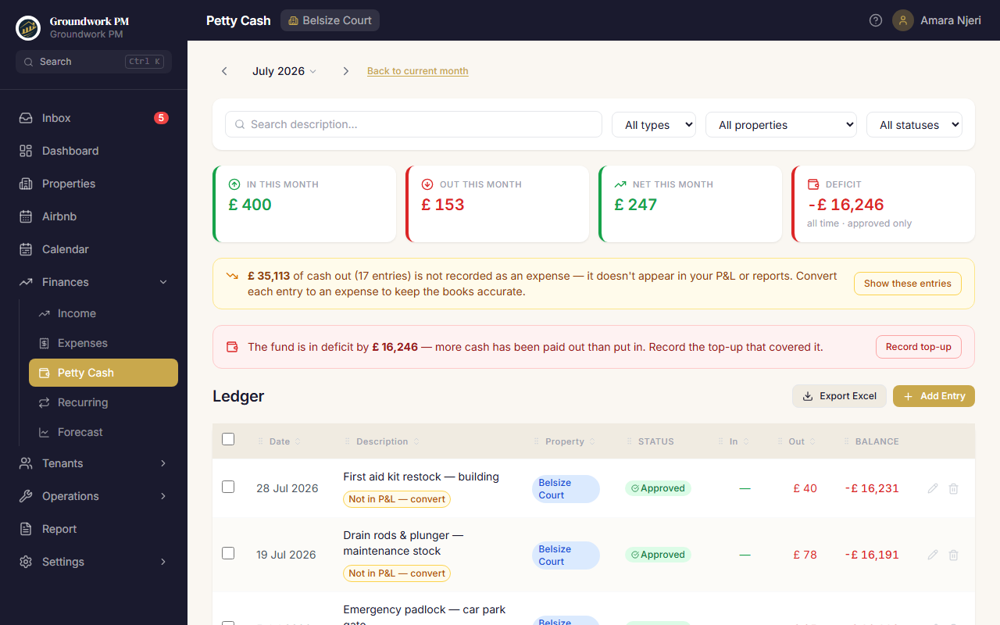
The petty cash balance is always recalculated from all entries (never stored as a number). Add Topup entries when you add money to the float, and select Petty Cash as the payment method when logging an expense to deduct it automatically.
Maintenance Management
A Kanban-based job tracker that takes maintenance from reported to resolved — with vendor assignment, priority management, and automatic expense logging.
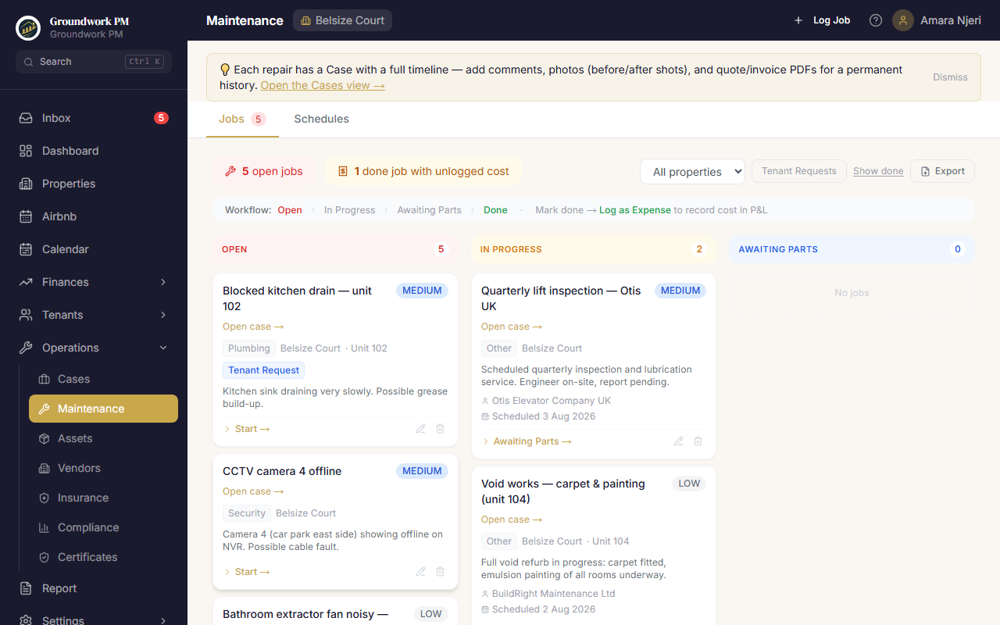
Job Workflow
Adding a Maintenance Job
Click Add Job
Fill in the title, description, property, unit, category (Plumbing, Electrical, Structural, Appliance, Painting, Cleaning, Security, Pest Control, Other), priority, and estimated cost. Check Emergency for urgent issues.
Move through stages
Click Move to Next Stage on the job card to advance it. Each stage transition is timestamped. Jobs submitted via the tenant portal show a Tenant Request badge.
Log as expense when complete
Once marked Done, click Log as Expense to create an expense entry linked to this job. The actual cost, vendor, and category are pre-filled.
Reports & Owner Statements
Generate professional monthly P&L reports and owner statements. The report page is accessible to Managers, Accountants, and Owners (with Owners seeing only the owner-facing statement).
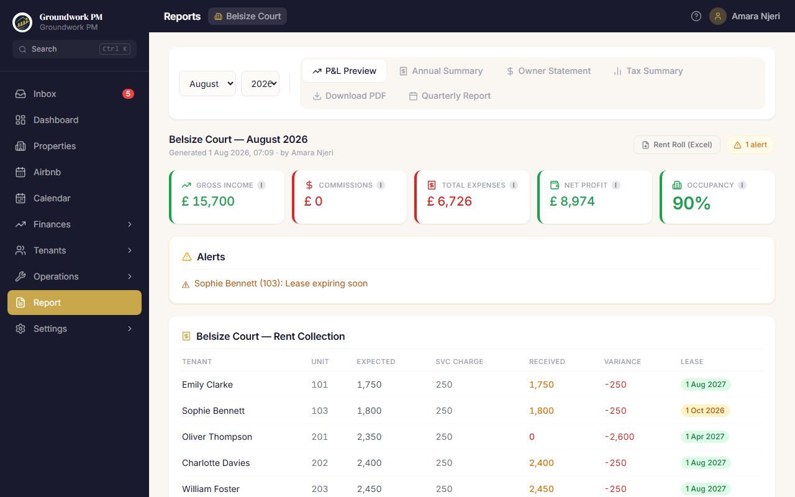
Report Tabs
| Tab | Contents |
|---|---|
| P&L Preview | KPI cards, rent collection table per tenant, expense category breakdown, vendor spend, petty cash reconciliation, management fee reconciliation |
| Annual Summary | 12-month table of income, expenses, and net profit with best-month highlighting |
| Owner Statement | Per-unit income breakdown, management fee deduction, net payable to landlord |
| Tax Summary | VAT and withholding tax breakdown from expense line items |
| Download PDF | Generate and download a professional PDF report — usable for landlord remittances |
| Quarterly Report | 3-month aggregated view ideal for quarterly landlord meetings |
P&L Formula
− Agent Commissions (income entries linked to agents)
− Operating Expenses (expenses where isSunkCost = false)
= Net Profit
Capital/sunk cost expenses are shown separately as "Capital Items" and do not affect net profit.
Sending a Report to the Owner
Download PDF
Go to the Download PDF tab and click Download Report. A polished PDF is generated server-side and downloaded to your device.
Draft email
Click the Email Draft button on the P&L Preview tab. A pre-populated email template opens with the property name, month, and a summary of key figures. Click Open in Mail App to send via your default email client.
Operations
Supporting modules that keep your portfolio compliant, insured, and organised — forecast, vendors, insurance, compliance, assets, and calendar. The proactive layer that surfaces issues from these modules (vacant units, low petty cash, negative cashflow forecasts, expiring policies) lives in the Operational Inbox as Smart Reminders.
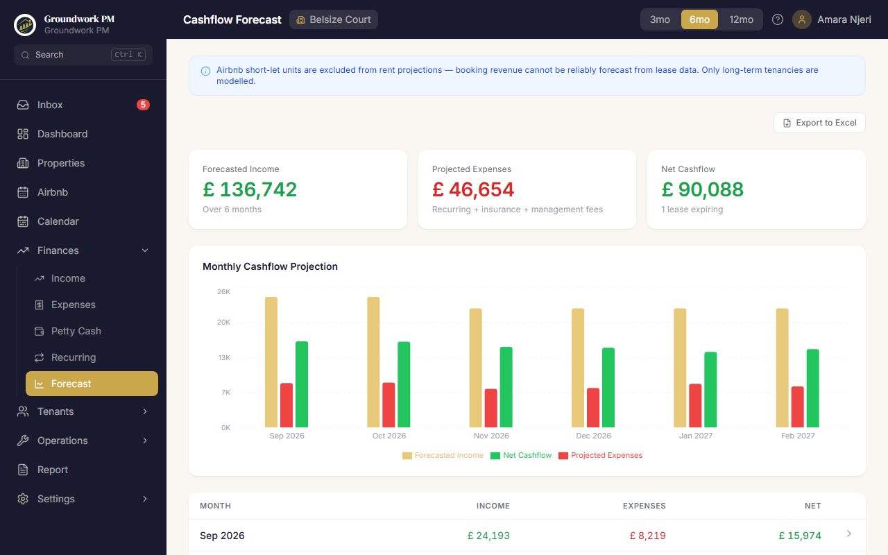
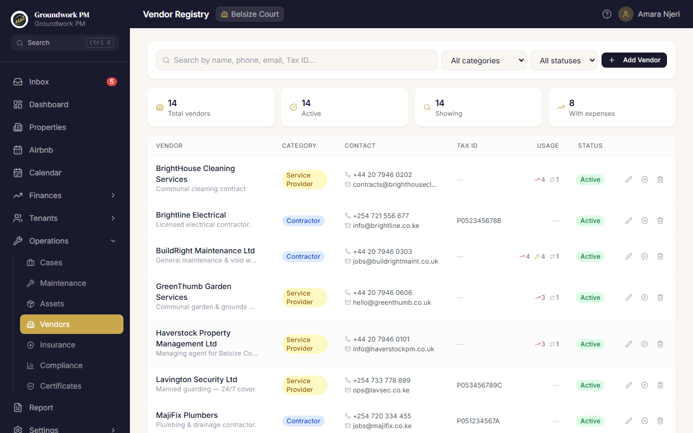
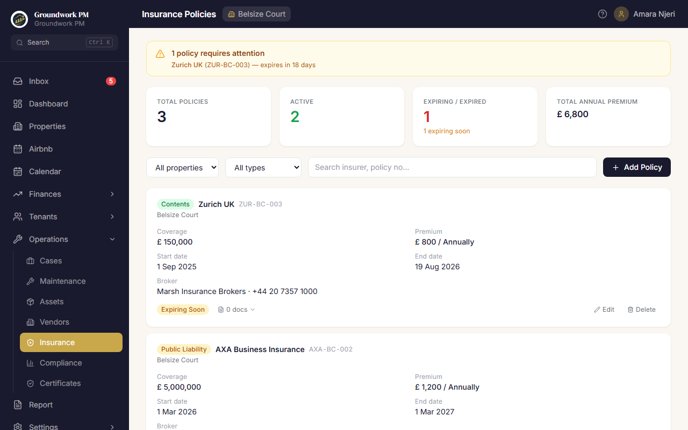
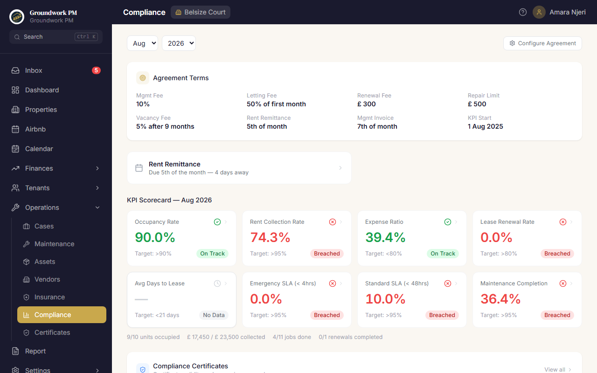
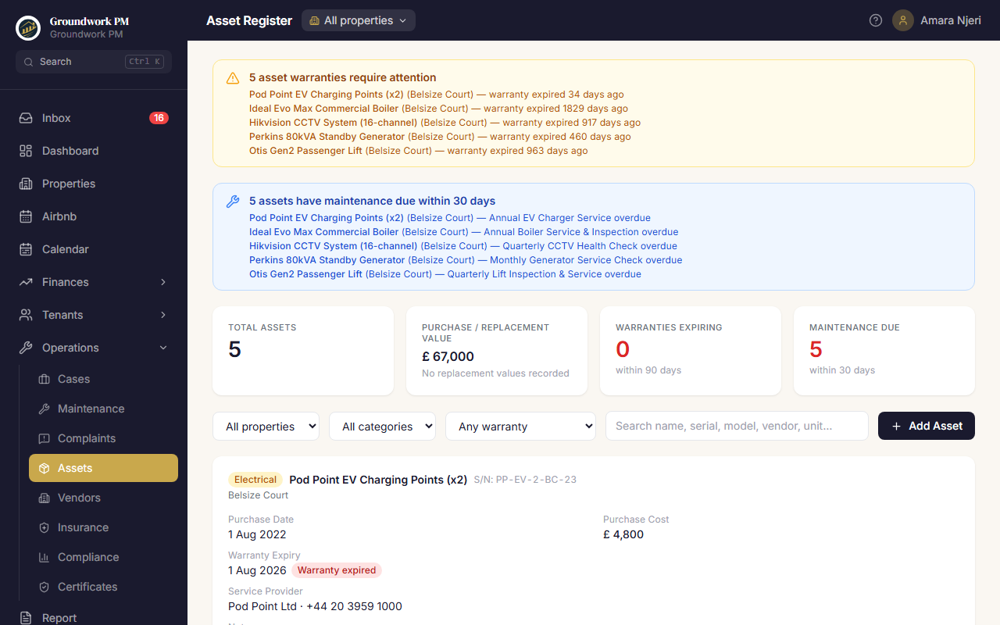
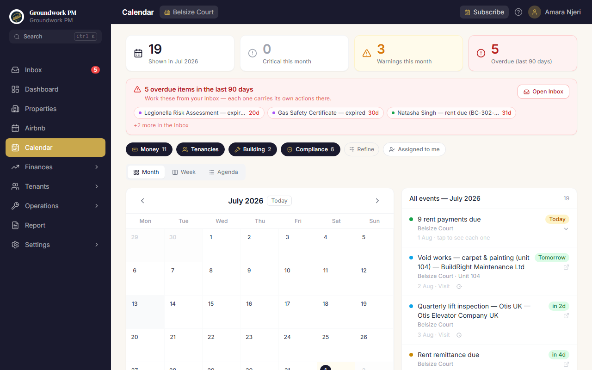
Forecast
Projects income and expenses for the next 3, 6, or 12 months using your recurring expenses, insurance premiums, lease renewal dates, and management agreements. Uses buildForecast() — no AI, pure deterministic projection from your existing data.
Vendors
Maintain a directory of contractors and suppliers. Each vendor has a category (Contractor, Supplier, Utility Provider, Consultant, Other), contact details, KRA PIN, and bank details. Vendors can be linked to expenses, maintenance jobs, assets, and recurring expenses — use the Vendor Select dropdown whenever you see a contractor/supplier field.
Insurance
Track policies per property with type (Building, Public Liability, Contents, Other), insurer, premium, frequency, coverage amount, and broker. Policies expiring within 30 days trigger automated alerts. Documents can be uploaded directly to each policy record.
Compliance & Certificates
Track compliance certificates (Fire Safety, Lift Inspection, Electrical, Gas Safe, etc.) with expiry dates. Status is computed automatically: EXPIRED EXPIRING SOON (≤30 days) VALID ONGOING (no expiry). Daily cron notifications alert managers when certificates are due.
Asset Register
Maintain an inventory of property assets — appliances, fixtures, furniture, plant & equipment. Each asset can have recurring maintenance schedules and a maintenance log (which can be linked to expense entries). The register tracks serial numbers, warranty dates, and replacement values.
Settings & Team Management
Configure your organisation, properties, management fees, branding, and team members. Settings are accessible to Manager and Admin roles only.
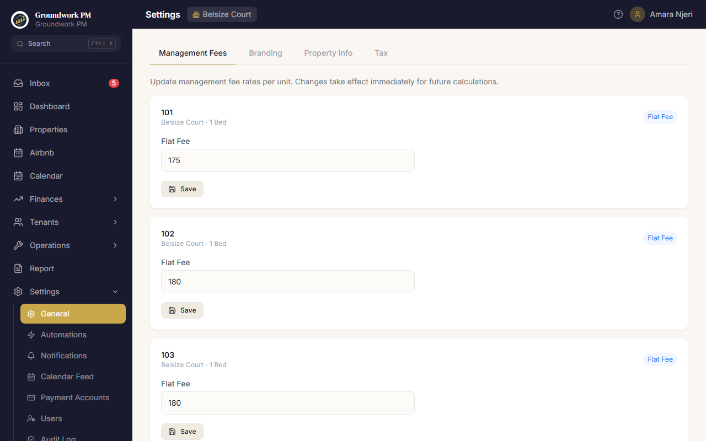
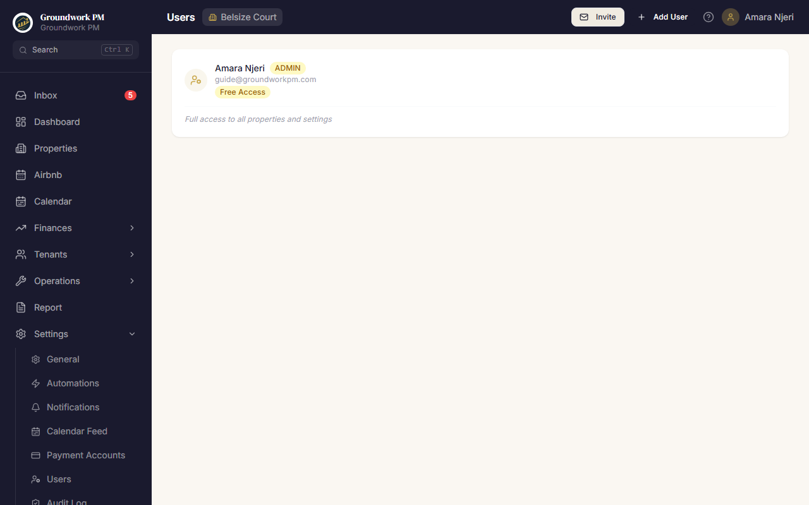
Settings Tabs
| Tab | What you configure |
|---|---|
| Management Fees | Short-let (Airbnb) management fee as a % of revenue; long-term rental flat fee per unit type. These drive the management fee reconciliation in reports. |
| Branding | Company logo, name, address. Also configures payment details (bank account, M-Pesa paybill/till, VAT number) printed on invoices and PDFs. |
| Property Info | Per-property currency override and logo. Property logo overrides the company logo on that property's reports. |
| Tax | Default tax type (ADDITIVE VAT or WITHHELD) and rate. Can be overridden per property. |
Adding Team Members
Go to Settings → Users
Click Invite User or Add User. Enter name, email, password, and assign a role.
Set property access
For Manager and Accountant roles, you can restrict access to specific properties via Property Access records. Users without a PropertyAccess record for a property cannot see its data in API responses.
Assign the billing owner
Only one user per organisation can be the billing owner — the person who manages the subscription. This is set at account creation and can be transferred in billing settings.
Audit Log
Every CREATE, UPDATE, and DELETE action in the platform is logged with the user's email, timestamp, affected record, and JSON before/after snapshots. Navigate to Settings → Audit Log to review the full trail. For a single record, click the 🕓 Clock icon on its row (e.g. on the Expenses page) to open a History Drawer showing just that record's changes with field-level diffs.
Email Notification Preferences
Each user controls which automated emails they receive from Settings → Notifications. Opt out of a whole category (e.g. lease-expiry alerts, overdue-invoice alerts) without affecting your teammates — preferences are per-user. Inbox reminders are never emailed, so they're unaffected. This is separate from the org-wide on/off switches on the Automations page.
API Keys & Webhooks Admin only
For integrations, admins can issue read-only API keys and register webhook endpoints from Settings → API.
- Public API — org-scoped, read-only endpoints under
/api/v1/(properties, tenants, invoices), authenticated with aBearer gwpm_…key. The raw key is shown once at creation, then stored only as a hash — copy it immediately. - Webhooks — register an endpoint to receive events such as
invoice.paidandmaintenance.created. Each delivery is signed with an HMACX-GWPM-Signatureheader so you can verify it came from GroundWorkPM.
Tenant Self-Service Portal
A public, token-based portal for tenants. No account creation required — tenants access their information via a unique shareable link generated by their manager.
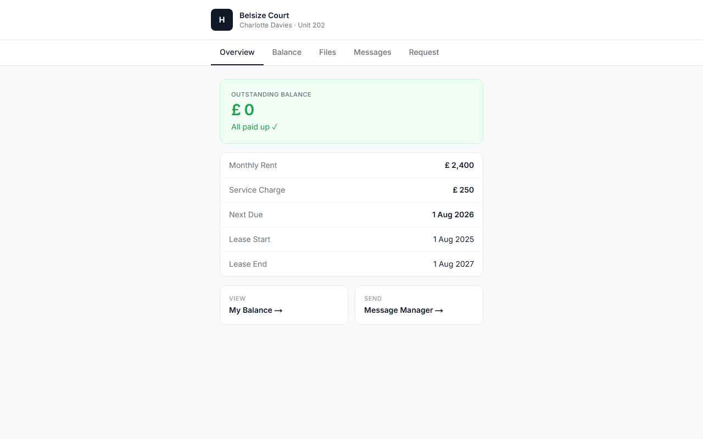
How Managers Generate the Link
Open tenant detail page
Navigate to Tenants → [Tenant Name].
Click Generate Portal Link
A unique UUID token is created and stored on the tenant record. The shareable URL is copied to your clipboard automatically.
Share with tenant
Send the URL via WhatsApp, email, or SMS. Tokens do not expire by default — use Revoke Link on the same button to invalidate the token if needed.
What Tenants See
| Tab | Content |
|---|---|
| Overview | Lease dates, monthly rent, outstanding balance, last 12 invoices with status and PDF download |
| Documents | Documents uploaded by the manager (lease agreement, receipts, notices) with secure download links |
| Maintenance Requests | Submit new requests (title, description, category, emergency flag) and view status of existing submissions |
Billing & Subscription
GroundWorkPM offers a 30-day free trial with no credit card required. After the trial, choose a plan that fits your portfolio size.
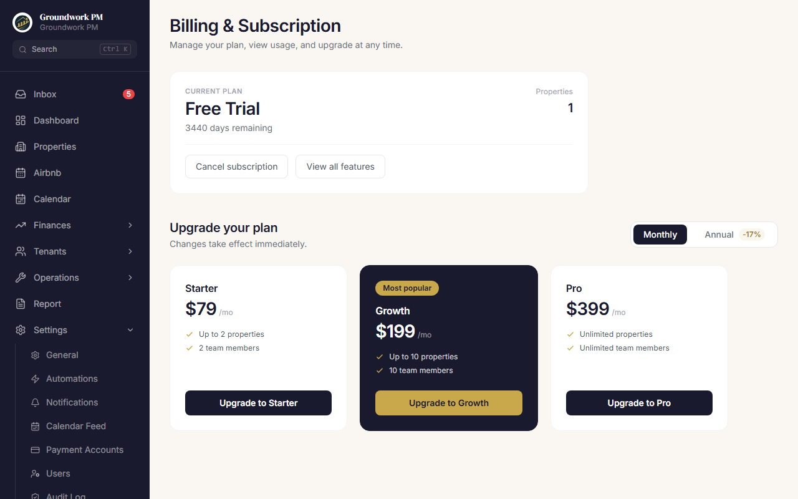
Plans
| Plan | Monthly | Annual | Properties | Team Members |
|---|---|---|---|---|
| Starter | $29/mo | $290/yr | Up to 2 | Up to 2 |
| Growth | $79/mo | $790/yr | Up to 10 | Up to 10 |
| Pro | $149/mo | $1,490/yr | Unlimited | Unlimited |
Trial Banner
During the trial period a banner appears at the top of every page:
- Active trial (8+ days left) — navy banner with day count; billing owner sees View plans button
- Expiring soon (≤7 days) — amber banner with urgent messaging
- Trial expired — red banner; data is safe but access is locked until a plan is chosen
Non-billing-owner team members see the banner but cannot act on it — they should contact the billing owner.
/billing are redirected with an error.
Automations
One control surface for everything the platform does automatically — the workflows that open Cases, the email alerts managers receive, and the proactive Inbox reminders. It's not a custom workflow builder; it's a fixed registry of proven templates your organisation switches on or off.
Three categories
| Category | Default | What it does |
|---|---|---|
| Workflow | Off (opt-in) | Auto-opens a Case when a condition fires — lease renewal due in 90 days, arrears untouched 7 days, compliance / insurance expiring in 30 days, urgent maintenance. |
| Email notification | On | The manager email alerts (lease, invoice, compliance, insurance, urgent maintenance) plus an opt-in monthly owner statement emailed to the property owner. |
| Smart reminder | On | The hint-only Inbox nudges — vacant unit, unsettled deposit, recurring expense due, low petty cash, negative cashflow, case SLA breach. |
Org toggle, per-property override, per-user opt-out
Each automation has an organisation-wide on/off switch. Need an exception for one property? Expand Customise per property and set it to Inherit / On / Off — the per-property setting wins over the org toggle. Separately, each individual can opt out of email categories from Settings → Notifications without changing anything for the rest of the team.
When automations run
All of these are evaluated by a single daily job at 07:00 UTC. Turning an automation off makes that day's job skip it entirely — no Case opened, no email sent, no reminder raised. Turning it back on resumes from the next run. Workflow automations are de-duplicated, so a condition that stays true won't open the same Case twice.
Appendix
Role access matrix, global search, mobile navigation, automated notifications, and multi-organisation setup.
Role Access Matrix
| Page / Feature | Manager | Accountant | Owner |
|---|---|---|---|
| Dashboard | ✅ | ✅ | ❌ |
| Properties | ✅ | ✅ | ❌ |
| Tenants | ✅ | ✅ | ❌ |
| Income | ✅ | ✅ | ❌ |
| Expenses | ✅ | ✅ | ❌ |
| Petty Cash | ✅ | ❌ | ❌ |
| Invoices | ✅ | ✅ | ❌ |
| Arrears | ✅ | ✅ | ❌ |
| Maintenance | ✅ | ✅ | ❌ |
| Forecast | ✅ | ✅ | ❌ |
| Vendors | ✅ | ✅ | ❌ |
| Insurance | ✅ | ✅ | ❌ |
| Compliance | ✅ | ✅ | ❌ |
| Assets | ✅ | ✅ | ❌ |
| Automations | ✅ | ❌ | ❌ |
| Report | ✅ | ✅ | ✅ |
| Settings | ✅ | ❌ | ❌ |
| Billing | Billing owner only | ❌ | ❌ |
Global Search
Press Cmd / Ctrl + K anywhere in the dashboard (or use the Search entry in the sidebar) to open a command palette that searches tenants, properties, invoices, vendors, cases, and maintenance jobs at once. Results are scoped to the properties you can access. Available to managers, admins, and accountants — hidden for the Owner role.
Mobile Navigation
On mobile, the sidebar is replaced by a fixed bottom navigation bar:
- Primary tabs: Home (Dashboard), Tenants, Income, Airbnb — always visible
- More menu: Tap the ⋮ icon to open a full-page drawer with all remaining navigation sections (Finances, Operations, Settings)
- Table views switch to stacked card layouts automatically on small screens
Automated Notifications
A daily cron job (07:00 UTC) sends email alerts to all Managers and Admins with property access when:
Each of these alerts can be switched off per organisation or per property from the Automations page, and individual users can opt out from Settings → Notifications.
| Trigger | Alert type | Window |
|---|---|---|
| Lease expiring | LEASE_EXPIRY_30D / LEASE_EXPIRY_7D | ≤30 days or ≤7 days |
| Invoice overdue | INVOICE_OVERDUE | >7 days past due date |
| Compliance cert expiring | CERT_EXPIRY | ≤30 days or ≤7 days |
| Insurance policy ending | INSURANCE_EXPIRY | ≤30 days or ≤7 days |
| Urgent maintenance open | MAINTENANCE_URGENT | Still OPEN after 4+ hours |
Notifications are deduplicated — you will not receive the same alert repeatedly within the dedup window.
Multi-Organisation Support
Users can belong to multiple organisations. After login, if you have multiple memberships and no active org is set, you are redirected to /select-org to pick your organisation. You can also switch organisations at any time from the org switcher in the sidebar header without logging out.
Data Import
Navigate to Import to bulk-import data from Excel. Each tab works the same way: download the template, fill it in, upload, and the rows are validated client-side before they're sent. Available importers: tenants, rent history, income, expenses, recurring expenses, petty cash, units, maintenance, vendors, and a full-property handover ZIP.
Several importers (tenants, rent history, expenses, petty cash, recurring) support an "Update existing records" mode so re-importing edits rows in place instead of duplicating them. The Expenses template can additionally carry an ID column — use Export existing to download your current expenses pre-filled, edit any field, and re-upload to resync without creating duplicates. Name columns (Property Name, Vendor Name, Unit Number) are resolved to the right records automatically; an unmatched name still imports, just unlinked, with a warning.
Built with Next.js 14 · Prisma · Supabase